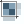

Dávkové zpracování¶
Dávkové zpracování nám umožní spustit jeden algoritmus vícekrát najednou s různými parametry. Spustit dávkový proces lze přímo z okna nástrojů zpracování vyvoláním kontextové nabídky pravým kliknutím na požadovaný algoritmus a výběrem Spustit dávkový proces (Obr. 43). Další možnost jak dávkový proces spustit je přímo z okna algoritmu, pomocí tlačítka Spustit jako dávkový proces v levém dolním rohu (Obr. 44).
Obr. 43 Spuštění dávkového procesu z okna nástrojů zpracování.¶

Obr. 44 Tlačítko Spustit jako dávkový proces v okně algoritmu.¶
Popis okna¶
V okně dávkového zpracování máme opět záložky Parametry a
Záznam. V záložce Parametry se nám zobrazí
všechny vstupní parametry vybraného algoritmu v jednom řádku, každý
řádek potom odpovídá samostatnému procesu. Řádky lze přidávat a
odebírat pomocí tlačítek  a
a  . Dále lze
nakonfigurovaný dávkový proces uložit do souboru ve
formátu JSON nebo tento typ souboru nahrát
. Dále lze
nakonfigurovaný dávkový proces uložit do souboru ve
formátu JSON nebo tento typ souboru nahrát
 . U algoritmů, kde je možná volba pokročilého
nastavení se pro aktivaci těchto parametrů ukáže ikonka
. U algoritmů, kde je možná volba pokročilého
nastavení se pro aktivaci těchto parametrů ukáže ikonka
 . Záložka záznam má totožnou funkci jako u
samostatného procesu. Pokud chceme výsledné vrstvy načíst do projektu,
je nutné zaškrtnout políčko Načíst vrstvy po dokončení.
. Záložka záznam má totožnou funkci jako u
samostatného procesu. Pokud chceme výsledné vrstvy načíst do projektu,
je nutné zaškrtnout políčko Načíst vrstvy po dokončení.
{kind=link}

Obr. 45 Okno dávkového zpracování.¶
Varování
Při odebírání řádků se odebere vždy poslední řádek.
Zadávání parametrů¶
Zadávání parametrů funguje, až na malé odchylky, stejně jako u samostatného procesu. Některá specifika si popíšeme níže.
Tip
Poklikáním na název sloupce/parametru, se automaticky vyplní hodnoty prvního řádku do ostatních řádků.
Výběr vrstev¶
Výběr vrstev provádíme za pomocí tlačítka …, kdy můžeme buď vybrat vrstvy nahrané v projektu (Obr. 47) nebo vyhledat soubory uložené na disku. V obou případech je možné (u některých algoritmů nutné) vybrat více vrstev. Pokud se jedná o algoritmus se vstupem jedné vrstvy, při výběru více vrstev se jednotlivé vrstvy přiřadí k vlastním procesům procesům.

Obr. 46 Možnosti výběru vrstev.¶
Obr. 47 Výběr více vrstev v projektu.¶

Obr. 48 Při výběru více vrstev se každá přiřadí k vlastnímu procesu.¶
Výstupní soubor¶
Zde je, oproti samostatnému procesu, nutné zadat cestu k výstupnímu souboru pomocí tlačítka …. Stačí však zadat uložení prvního výstupního souboru a objeví se nám okno pro automatické doplnění výstupních souborů (Obr. 49). Zde je možné automaticky vytvořit výstupní soubory s příponou pořadového čísla nebo na základě vybraného vstupního parametru (název vrstvy, velikost bufferu atd., viz Obr. 50).
Varování
Pokud v obecném nastavení možností zpracování neaktivujeme
Použít název souboru pro název vrstvy budou
výsledné vrstvy v panelu vrstev pojmenovávány podle algoritmu (viz.
Nastavení, historie, prohlížení výsledků ). Samotné soubory však budou pojmenované podle naší
konfigurace výstupu.

Obr. 49 Nastavení automatického vyplnění výstupního souboru.¶

Obr. 50 Možnosti automatického vytvoření přípon výstupního souboru.¶
Poznámka
U vektorových dat nelze v současné verzi nastavit spuštění pouze vybrané prvky.
Praktická ukázka¶
V následujících příkladech si ukážeme možné praktické využití dávkového zpracování.
Tvorba vícenásobné obalové zóny¶
V případě, že potřebujeme kolem nějakého území vytvořit větší počet
různě velkých obalových zón, je možné využít funkci
 Obalová zóna v režimu dávkového procesu. V našem
příkladu vytvoříme z vrstvy velkoplošných chráněných území tři
obalové zóny (1, 5 a 10 km).
Obalová zóna v režimu dávkového procesu. V našem
příkladu vytvoříme z vrstvy velkoplošných chráněných území tři
obalové zóny (1, 5 a 10 km).
Spustíme dávkový proces algoritmu, nastavíme vstupní vrstvu s do tří řádků (pro každý proces) a požadované hodnoty vzdáleností obalové zóny v metrech (1000, 5000, 10000).

Obr. 51 Tvorba vícenásobné obalové zóny vybraného území.¶
Vybereme výstupní soubor a nastavíme automatickou výpň na základě parametru Vzdálenost a spustíme dávkový proces tlačítkem Run, zkontrolujeme záznamy a zavřeme okno. V tomto případě se nám do názvu souboru vloží i znak čárky (jedná se o číslo s desetinnou čárkou) což není zrovna ideální. Název můžeme opravit ručně přímo v okně, nebo v případě potřeby potom soubory hromadně přejmenovat.
Obr. 52 Nastavení automatického vyplnění na základě parametru - Vzdálenost.¶

Obr. 53 Výsledné názvy výstupních souborů¶
Obr. 54 Výsledek tvorby vícenásobné obalové zóny.¶
Ořezání více rastrových vrstev¶
K tomuto úkolu budeme potřebovat více rastrových vrstev, pokud nemáme,
vytvoříme z digitálního modelu terénu (dmt) vrstvu sklonu svahů (Slope) a
orientace svahů (Aspect). K vytvoření vrstvy sklonu a orientace svahů jsme nyní
schopni využít více funkcí, mimo vestavěné funkce QGISu to jsou např. GDAL
 Sklon a Aspekt nebo využít externí
r.slope.aspect nebo Slope, aspect,
curvature.
Sklon a Aspekt nebo využít externí
r.slope.aspect nebo Slope, aspect,
curvature.
{kind=link}
{kind=link}

Obr. 55 Rastrové vrstvy.¶
Vytvořili jsme tedy 2 nové rastrové vrstvy. Nyní opět využijeme funkci  Oříznout rastr podle rozsahu, ale tentokrát jako dávkový proces na všechny rastrové vrstvy najednou.
{kind=link}
Jako vstupní vrstvy vybereme rastrové vrstvy, které chceme ořezat (dmt, aspect, slope), a zvolíme rozsah ořezu v mapovém okně, hodnotu rozsahu potom nakopírujeme do dalších řádků (Obr. 56). Výstupním souborům necháme přidělit příponu podle parametru Vstupní vrstva a spustíme proces.

Obr. 56 Vstupní vrstvy a zvolený rozsah pro dávkový zpracování Oříznout rastr podle rozsahu.¶

Obr. 57 Automatické přidělení přípony výstupním souborům na základě vstupních vrstev.¶
Obr. 58 Výsledek hromadného ořezání rastrových vrstev.¶